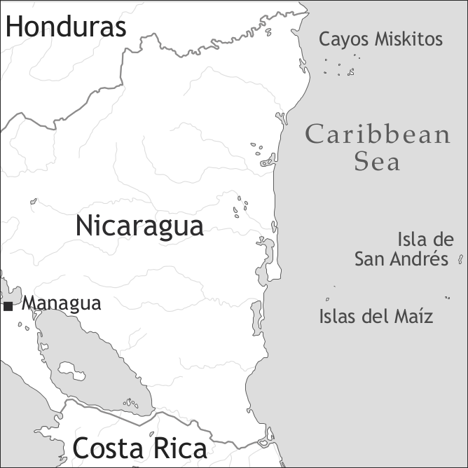

by Angela Bartens

San Andres-Providence Creole English is spoken in the archipelago of San Andres, Providencia and Santa Catalina, Colombia. The archipelago consists of the island of San Andres and the two islands of Providencia (also called Old Providence) and Santa Catalina, which are located off the coast of Nicaragua, far from the Colombian mainland. The language is also spoken by diaspora communities, of which the one in mainland Colombia is the most important, followed by communities on the Central American Caribbean Coast, especially in Panama, and in the United States.
The two main varieties of the language are San Andres Creole English (or Saintandrewan) and Providence Creole English. The current chapter focuses on the former, but occasionally also takes the latter into account. At first sight, the distinguishing criterion between the varieties appears to be geographical. However, they are structurally distinct varieties, and I believe that sociolectal variation in terms of a hypothetical creole continuum constitutes an even more important criterion: Providence Creole English is clearly a more acrolectal variety of Western Caribbean Creole English than San Andres Creole English (Bartens 2009a). Unless otherwise specified, basilectal San Andres Creole English constitutes the default lect described here.
Possibly visited by Columbus during his fourth trip to the New World, San Andres and Old Providence are depicted for the first time on the 1527 “Universal Map”. Dutch seafarers and smugglers soon started supplying themselves with timber and other goods from the islands (cf. Petersen 2001: 21). The first actual settlers were English Puritans who arrived in the archipelago between 1627 and 1631, coming both from the Bermudas, Barbados and other Caribbean islands and directly from England. In 1631, the Seaflower brought English and Scottish settlers as well as the first African slaves to the archipelago. However, these colonies were fairly short-lived: Henrietta, at present called San Andres, was abandoned in 1632 because of the lack of sweet water reservoirs on the island. Until 1641, the Puritan community of Old Providence traded with the Miskito Coast. Since there was a shortage of female settlers, some Puritans obtained permission from the Miskito chiefs to take Miskito wives (Petersen 2001: 26).
In 1641 the Spanish, lead by Francisco Díaz Pimienta, captured Old Providence as part of their endeavour to maintain control over the region and most settlers and slaves were sent to England and to Cartagena, respectively. However, some settlers and slaves appear to have escaped to the Central American Coast, San Andres, and other Caribbean islands. Indeed, it seems likely that the first African group to be incorporated into the Miskito nation was constituted by slaves who fled Old Providence during the 1641 upheaval (cf. Holm 1978: 179–180). Especially those slaves and settlers who went to the nearby Miskito Coast of present-day Nicaragua, at a distance of only approximately 220 kilometres, may have returned to Old Providence.
During the period 1641–1677, Old Providence continued to be disputed by the Spanish and the English because of its strategic importance in the Western Caribbean. Virtually nothing is known about the period 1677–1780, called “the forgotten century” in Colombian history writing (e.g. Vollmer 1997). It is generally assumed that the foundations of the actual population of the archipelago were laid around 1730 with the arrival of colonists from other parts of the British Caribbean, especially Jamaica, and directly from the British Isles (above all from Scotland and Ireland) as well as from West Africa. In 1793, the population of San Andres consisted of several families and 285 slaves (Parsons 1985: 48, 50). Slaves continued to be shipped in directly from Africa, other British Caribbean islands and, most importantly, from Jamaica, in order to cultivate cotton, thus establishing an important historical link with Jamaica and Jamaican Creole (cf. Edwards 1970: 29).
An off-shoot or second generation creole (pace Chaudenson 1992), San Andres-Providence Creole English probably jelled during the second half of the 18th century (Bartens 2009b). It has in turn contributed to the Central American English-lexifier creoles since San Andres (and also Old Providence) served as a springboard in the colonization of the Nicaraguan Corn Islands by 1810 and Pearl Lagoon, north of Bluefields, as well as Bocas del Toro, Panamá, during the early 19th century. After the abolition of slavery in the archipelago in 1853, many Sanandresans and Providence Islanders were recruited to work on the Miskito Coast. This practice continued until the early 20th century. Later back-and-forth migrations between the archipelago and the Central American Coast also contributed to the high degree of similarity and mutual intelligibility between the Western Caribbean Creoles in question.
In 1822, San Andres and Old Providence presumably chose to become part of Colombia.3 During the remainder of the 19th century, Colombia interfered little in local affairs. This changed drastically when forced Hispanization was gradually introduced between 1902 and 1926. From 1953 onwards, San Andres (but not Old Providence) went through a devastating Free Port experiment which turned Native Islanders into a dispossessed minority on their own island. The new Colombian constitution ratified in the early 1990s theoretically empowered Native Islanders to try to reverse the negative socio-political and environmental processes. In spite of a number of changes – some real, others cosmetic in nature – Native Islanders continue to be an oppressed minority.
According the 2005 census report, the population of San Andres is 55,426 and the one of Providencia 4,147, totalling 59,573 inhabitants (DANE 2005). Native Islander activists consider the figures far too low, at least as far as San Andres is concerned, where the Native Islander community clearly constitutes a minority, numbering approximately 20,000.
The sociolinguistic situation on San Andres can no longer be considered a case of classical diglossia. Standard English is spoken by older people and those who have lived abroad. The former tend to speak Standard Caribbean English, the latter mostly Standard American English. Standard English is also the only language of sermon in some churches. In other churches, only Spanish or a mixture of Standard English, Creole, and possibly Spanish is employed. Although Spanish continues to be frequently used in formal settings even after the ratification of the new Colombian constitution in the early 1990s, which sanctioned official bilingualism in Spanish and “English spoken in the manner of the islands” in 1993 (Colombian national law 47 of 1993), it is likewise used in informal settings such as the nuclear family or peer groups, formerly domains of exclusive use of San Andres Creole English. Despite affirmations to the contrary (e.g. Morren 2010), the Creole is no longer automatically passed on inter-generationally. Considering the efforts to promote it that I discuss below, the community is vacillating somewhere between stages 5 and 7 of Fishman’s Graded Intergenerational Disruption Scale (Fishman 1991).
The absence of Standard English from the language repertoire of most San Andres Islanders seems to have contributed to an increased prestige of the Creole, which may even have re-creolized to some extent as a result (O’Flynn de Chaves 1990: 23–24). Language contact with Spanish has led to the incorporation of high-frequency loans and syntactic calquing (cf. Bartens 2013+). Recent efforts by the national Ministry of Education to (re)introduce Standard English into the linguistic repertoires of all the inhabitants of the archipelago irrespective of their ethno-linguistic background will most likely intensify the endangerment of San Andres Creole English.
Throughout the 1990s, attitudes changed in favour of San Andres Creole English, although many people still insist on it being merely “Broken English”, a variety they themselves would presumably never speak. At the same time, “yanking” or adjusting one’s Creole upwards towards Standard, above all American, English, has been ridiculed throughout the second half of the 20th century (Edwards 1968: 4).
Providence Creole English is more acrolectal and speakers insist on their English legacy even more than San Andres Native Islanders. On the other hand, as a result of multiple factors, the presence of the Spanish language is much more reduced on Providencia and Santa Catalina than on San Andres. In 2001–2002, radio air time in San Andres Creole English or creolized English (the two are usually not distinguished from each other) totalled approximately 3 hours from Monday to Friday and approximately 2 hours per day on weekends. A few hours of San Andres Creole English or English language local TV programmes would be broadcast mainly on weekends. At the same time, American satellite channels could be easily received on San Andres but not so easily on Providencia. Colombian newspapers reached San Andres a day late and Providencia at least two days late. Local newspapers were published at irregular intervals and contained only very little material in English or Creole.
By 2008, the situation had changed drastically to the detriment of San Andres Creole English and even English: Broadcasting time for local TV productions had been reduced to a minimum. They would feature creolized English at best, not San Andres Creole English, and were regularly cancelled for airing U.S. baseball games or Colombian news during my two fieldwork periods. English (not Creole) language radio broadcasting had become the near-monopoly of two Christian radio stations (Christian Radio 92.5 FM, Good News 102.5 FM). Among the local newspapers, only the Archipielago Post appeared regularly every Friday. The only remnant of English and/or Creole in the newspaper was the heading of section C: “The Archipielago Sports”.
Crucially, Human Linguistic Rights were also being violated as it was not permitted to speak English or Creole during court proceedings (p.c. Oakley Forbes, Sept. 2008). Activists consider that the “linguicide” under way in the archipelago is part of a larger campaign to eradicate the Native Islander community as a cultural, ethnic, economical and political entity through segregationist, discriminatory and racist practices (cf. Forbes 2008: 2; Bartens & Lucena Torres 2010).
After decades of repression of both Standard English and San Andres Creole English, the legal base for “Ethnoeducation” was laid on the national level in 1978. In 1980, the Interministerial Committee for the Incorporation of the islands into the National Integration Plan recommended the preservation of bilingualism in the archipelago (Clemente 1991: 267). Since then, considerable resources have been spent on setting up bilingual (and even trilingual) education programmes. The new 1991 Colombian Constitution and 1994 legislation with regard to national ethnic minorities offer juridical tools to establish such programmes but they are seriously under-exploited in the archipelago.
Among the latest efforts, there has been the “The Trilingual Project 2000” run with the aid of SIL International from 1999 until 2004 and a teacher training programme run by two Sanandresan educators for ten months in 2006. All efforts suffer from discontinuity, downplaying the importance of the Creole on the part of the local decision-makers, the heterogeneity of the teacher and student populations, and corruption (Bartens 2011). For instance, the head of Ethnoeducation within the departmental Ministry of Education told me in late 2008: “Creole is included in English. Therefore, there is no reason to introduce it into the curriculum.”
The vowel system of San Andres Creole English consists of eleven phonemes which can be identified by means of minimal pairs. Out of those eleven phonemes three are nasal vowels and another three are long vowels. They are shown in Table 1.
|
Table 1. Vowels |
|||
|
front |
central |
back |
|
|
close |
i, i:, ĩ |
u, u: |
|
|
close-mid |
e |
o |
|
|
open-mid |
ɛ̃ |
||
|
open |
a, a:, ã |
||
The duration of the nasal vowels corresponds more to the duration of the long oral vowels than the short ones.
For some contrasts, there are very few minimal pairs: /ĩ/ contrasts with /iː/ only in ihn ‘3sg’ vs. iin ‘in’ (this is the form when postposed, the San Andres Creole English preposition is iina; Providence Creole English has in and ina). Similarly, /ã/ vs. /aː/ as in faahn ‘from’ vs. faam ‘to pretend’. On the other hand, other contrasts occur very frequently, e.g. /a/ vs. /aː/ as in hat ‘hot’ vs. haat ‘heart’. In addition, San Andres Creole English possesses six minor vowel allophones: [ɪ, ʊ, ɛ, ɛː, ɔ, ɔː].
San Andres Creole English has 23 consonantal phonemes, which are presented in Table 2:
|
Table 2. Consonants |
|||||||||
|
bilabial |
labio-dental |
dental/ alveolar |
palato-alveolar |
palatal |
velar |
labio-velar |
glottal |
||
|
plosive |
voiceless |
p |
t |
c |
k |
||||
|
voiced |
b |
d |
ɟ |
g |
|||||
|
nasal |
m |
n |
ŋ |
||||||
|
trill |
r |
||||||||
|
fricative |
voiceless |
f |
s |
ʃ |
h |
||||
|
voiced |
v |
z |
|||||||
|
affricate |
voiceless |
ʧ |
|||||||
|
voiced |
ʤ |
||||||||
|
lateral/ approximant |
l |
j |
w |
||||||
When moving towards the acrolect, speakers depalatalize /c/ and /ɟ/: kyan ‘can’ > kan, gyal ‘girl’ > gal. Although /z/ was assigned phonemic status, I doubt such words as zuon ‘zone’ belong to the basilect. On the other hand, /ʒ/ is not included in the table as words like okiezhan ‘occasion’ definitely only belong to the acrolect. San Andres Creole English has two other minor consonants, /ɾ/ and /ʔ/. Two consonants only occur in loanwords: /ɲ/ and /x/, e.g. nyam ‘to eat’, José (a Spanish first name).
San Andres Creole English permits both complex syllable onsets and syllable codas, e.g. shrang ‘strong’ and likl ‘little’. Stress assignment is variable and largely follows English patterns. There are a certain amount of grammatical, pragmatic and lexical tonal oppositions where rising contrasts with falling tone. I shall give one example of each kind of oppositions with the item with the falling tone mentioned first, the item with the raising tone in second place: kyan ‘can’ vs. kyaan ‘cannot’, no [neg] vs. noo [neg.emph], huol ‘whole’ vs. huol ‘to hold’. No systematic investigation of the tonal oppositions of San Andres Creole English has been conducted so far. Following Marcia Dittman (p.c.), there seem to be tonal oppositions in Providence Creole English.
A near-official orthography devised by the Spelling Committee in 1999/2001 (Spelling Conventions for Islander English 2001) is used in most writing. The orthography is near-phonemic in nature but features such idiosyncrasies as, for instance, use of <y> and <w> for word-final /i/ and /u/, respectively.
San Andres Creole English nouns can be divided into common and proper nouns, e.g.
(1) daag, haas ‘dog, horse’4
(2) Isabel (a female name)
(3) Archbold (a surname)
(4) Orange Hill (a place name)
As can be seen from examples (2)–(4), proper names tend to conserve the English/Spanish spelling. As a matter of fact, this is what the San Andres Creole English Orthography Committee (Spelling Conventions for Islander English 2001) recommends. An exception is constituted by the hybrid form
(5) Saint Ketliina
Saint Catherine
‘Saint Catherine’ (a place name)
In basilectal San Andres Creole English, nouns are invariable and derive in the majority of cases from an English singular form. At times, an English plural has fossilized as the basic form. As a result, we find singulars such as
(6) shuuz, tiit
shoe tooth
‘shoe, tooth’
Ailandaz ‘Islander’ is likewise a singular which has to be pluralized in order to denote more than one person.
Plural marking is very frequent but not obligatory. Factors favouring plural marking are animacy, especially humanness, and definiteness. Plural marking of the same noun in the preceding sentence disfavours marking it again. Pluralization is achieved by means of postposing the 3rd person plural pronoun dem (7). An alternative strategy is to use quantifiers (8) or in some cases plural demonstratives (9):
(7) Di pikniny dem we stodi Baptis taak di trii.
art.def child pl rel study Baptist talk art.def three
‘The children who study at one of the Baptist schools talk the three (languages).’
(8) So aal di animal neva kuda flai op.
so all art.def animal neg.pst could fly up
‘But not all of the animals could fly up [to the mountain top].’
(9) Dem bwai go skuul.
dem.pl boy go school
‘Those boys go to school.’
San Andres Creole English features an associative plural formed with a first name and the plural marker dem:
(10) Alma dem
‘Alma and her friends/folks’
(11) Mis Aurora dem
‘Miss Aurora and her folks/family/friends’ (Bartens 2003: 31)
English-derived plural -z may occur in very acrolectal varieties such as in Providence Creole English:
Natural gender is very seldom marked. If it is necessary, gender marking can be achieved by means of preposing shi or hi to a noun, most frequently an animal name:
(13) shi daag, hi daag
‘female dog, male dog’
Note that as a pronoun, the feminine form shi only occurs in acrolectal varieties, e.g. Providence Creole English.
In addition, there are lexical pairs like
(14) gyal – bwai, kou – bul
‘girl – boy’, ‘cow – bull’
San Andres Creole English has both definite and indefinite articles. The definite article is di. Providence Creole English also features the variant i. De, however, is the local English article and not part of the Creole system. The definite article is preposed to both the noun and possibly occurring modifying adjectives or numerals. It does not co-occur with demonstrative or indefinite pronouns.
(15) di gud ting bout ih
art.def good thing about 3sg.n
‘the good thing about it’ (Bartens 2003: 37)
(16) bikaa i piipl dem jos kom iin
because art.def people pl just come in
‘because the people just immigrate’ (Providence Creole English; Bartens 2003: 36)
Definite articles are not used with mass nouns or certain abstract nouns.
(17) Milk gud fi yu.
milk good for 2sg.obj
‘Milk is good for you.’ (Bartens 2003: 37)
(18) Piipl bring iin dem bad mjuuzik.
people bring in 3pl.poss bad music
‘They [the immigrants] bring their evil music with them.’
However, they are used with generic nouns in subject function:
(19) Di dag dem baak.
art.def dog pl bark
‘Dogs bark.’
The indefinite article is wan. Since it is homonymous with the numeral ‘one’, its use implies the idea of countability. The English indefinite article a can also be regarded as part of the Creole system. It is always invariable and excludes any idea of countability. Like the definite article, the indefinite articles are preposed to the noun.
(20) Di gyal had wan guol ring we ihn pupa gi im
art.def girl have.pst art.indf gold ring rel 3sg.poss father give 3sg.obj
an wan guol niigl.
and art.indf gold needle
‘The girl had a golden ring which her father had given to her and a golden needle.’
(21) Beda Taiga len im a nek tai.
Brother Tiger lend 3sg.obj art.indf neck tie
‘Brother Tiger lent him a neck tie.’ (Bartens 2003: 36)
The San Andres Creole English pronominal system is presented in Table 3.
|
Table 3. Personal pronouns and adnominal possessives |
||||
|
subject |
object |
adnominal possessives |
reflexive pronouns |
|
|
1sg |
mi, A |
mi |
fi mi |
miself |
|
2sg |
yu |
yu |
fi yu |
yuself |
|
3sg |
ihn, (h)im |
(h)im |
fi ihn/him |
(h)imself |
|
3sg.n |
ih |
ih |
fi ih |
ihself |
|
1pl |
wi |
wi |
fi wi |
wiself |
|
2pl |
unu |
unu |
fi unu |
unuself |
|
3pl |
dehn, dem |
dem |
fi dem |
demself |
As can be seen from Table 3, the subject and object pronoun paradigms largely overlap. The 1sg form A occurs in the mesolect and the acrolect. In the acrolect, the female forms shi [3sg.sbj.f] and har [3sg.obj.f] surface but I do not consider them part of the Creole system. San Andres Creole English does not distinguish between independent and dependent personal pronouns.
There is no special pronoun conjunction construction. Instead, pronouns are conjoined with full NPs. The order with the pronoun preceding the NP is typically Creole whereas the reverse order is calqued from English:
(22) Mi an da man iz nat fren.
1sg and dem man cop.prs neg friend
‘I and that man are not friends.’
In the domain of possessive pronouns, some speakers use the adpositional fi + pronoun construction only as independent possessive pronouns and in co-occurrence with the topicalizer da.
(23) Dis da fi wi langwij.
dem foc for 1pl.poss language
‘This is our language.’ (Bartens 2003: 51)
In adnominal contexts, they use bare personal pronouns.
(24) Tek out unu buk!
take out 2pl.poss book
‘Take out your books!’ (Bartens 2003: 51)
Other speakers, perhaps the majority, use the fi + pronoun-construction in adnominal contexts as well.
(25) Fi mi buk de pan di tiebl.
for 1sg.poss book cop.loc upon art.def table
‘My book is on the table.’
When asked about a difference in meaning, speakers say the adpositional construction is more emphatic than a bare adnominal possessive pronoun. In some cases, it also appears to be a matter of sentence rhythm and euphony. In the 3rd person plural, some speakers perceive dehn to express collectivity as opposed to dem individuality as can be gleaned from examples (26) and (27):
(26) Di pikniny dem tek out dehn buk.
art.def child pl take out 3pl.poss book
‘The children take out the book which belongs/the books which belong to all of them.’ (Bartens 2003:52)
(27) Di pikniny dem tek out dem buk.
art.def child pl take out 3pl.poss book
‘Every child takes out their own book.’ (Bartens 2003:52)
Nominal possession is not marked, i.e. it is expressed through juxtaposition, with the possessor preceding the possessum:
(28) Gloria piknini
Gloria child
‘Gloria’s child/children’
Reflexive pronouns are formed by means of adding -self to the personal pronouns:
(29) Wi hafi defend wi-self
1pl have.to defend 1pl-refl
‘We have to defend ourselves.’ (Bartens 2003: 49)
Pronominal and adnominal demonstratives are homonymous. Adnominal demonstratives are preposed to the item they modify and cannot co-occur with a definite article.
There is a two-way contrast between dis ‘this’ vs. da(t) ‘that’.
(30) dis hous
dem house
‘this house’
(31) dat hous
dem house
‘that house’
Both the proximal and distant demonstratives can be emphasized: dis-ya, dat-de.
(32) dis-ya hous
dem-emph house
‘this very house’
(33) dat-de hous
dem-emph house
‘that very house’
San Andres Creole English indefinite pronouns are based on generic nouns:
(34) Mek Ai tel yu somting now.
make 1sg.sbj tell 2sg.obj something now
‘Let me tell you something now.’
Negative concord is typical of San Andres Creole English as indefinites of the type enitin(g) ‘anything’ are not part of the Creole system:
(35) A no sii nonbadi nowe.
1sg.sbj neg see nobody nowhere
‘I didn’d see anybody anywhere.’ (Bartens 2003: 61)
The San Andres Creole English Orthography Committee (Spelling Conventions for Islander English 2001) decided that International English spelling be used for all numerals which, as in English, precede the modified noun. This obscures the differences in pronunciation. Crucially, San Andres Creole English has ordinal numbers distinct from cardinal numbers only up to ‘the fifth:
(36) Ihn da di tord porson we kom an aks dis-ya kweshon.
3sg.sbj foc art.def third person rel come and ask dem-emph question
‘She/he is the third person who comes to ask this question.’ (Bartens 2003: 64)
(37) Ihn da di siks porsn we kom iin.
3sg.sbj foc art.def sixth person rel come in
‘She/he is the sixth person who comes in.’ (example constructed by the author)
Neks is used in the sense of ‘the second’:
(38) Dehn mek a neks big paati.
3sg.subj make art.indf next big party
They organized a second big party.
The distributive use of numerals is quite restricted in present-day San Andres Creole English:
San Andres Creole English possesses indefinite quantifiers such as plenti ‘plenty’, moch ‘much’, likl ‘little’, nof ‘enough’, etc., which all precede the modified noun, e.g.
(40) Wi gat plenti problem.
1pl.sbj get plenty problem
‘We have many/a lot of problems.’ (Bartens 2003: 66)
Adjectives are used as either attributive adjectives, in which case they precede the modified noun, or as predicative adjectives, in which case they follow the noun. In both cases they are invariant.
(42) Di son hat tudee.
art.def sun hot today
‘The sun is hot today.’ (Bartens 2003: 38)
If an adjective is modified by a degree word, the latter one precedes the adjective:
(43) Di son tuu hat.
art.def sun too hot
‘The sun is very hot.’
The mechanisms of adjective comparative formation are retained from English, but formations with (at times additional) preposed moa and mos are more frequent and have replaced some suffixal forms with -a, -es < English -er, -est, see examples (44) and (45):
(44) Ih moa beta bikaa ih kom fram di haat.
3sg.n more better because 3sg.n come from art.def heart
‘It’s better because it comes from the heart.’
Following the English pattern, the negative comparative and superlative are formed with les (Providence Creole English also lesa) and liis, respectively, but they are rare in comparison with the positive forms. The standard marker used with comparatives is an:
(45) Di pleis moa deinjeros nou an bifo.
art.def place more dangerous now than before
‘The place is more dangerous now than before.’ (Bartens 2003: 41)
As in English, the superlative usually requires the use of the definite article di. The equative comparative is formed with like. The form on(g)li(e)s is not a superlative but a positive form with the meaning ‘only’. On the other hand, one finds both bes and besties as superlatives of gud. Likewise, Saintandrewan uses both wors and worsara as superlatives of bad:
(46) Dis suup gud laik fi mi muma.
dem soup good like for 1sg.poss mother
‘This soup is as good as my mother’s.’ (Bartens 2003: 41)
(47) Da di besties wei tu mek di papaya juus.
dem art.def best way comp make art.def papaya juice
‘That is the best way to make papaya juice.’ (Bartens 2003: 41)
(48) Him da di worsara
3sg.sbj foc art.def worst
‘She/he is the worst.’ (Bartens 2003: 41)
Iteration of adjectives is another strategy of absolute superlative formation:
(49) Uova de flat flat.
over dem flat flat
‘It is very flat over there.’ (Bartens 2003: 40)
Indeed, the functions of reduplication or iteration are always iconic in San Andres Creole English (see also ex. (39) above).
San Andres Creole English verbs can be divided into two main groups, dynamic and stative verbs. There is a general tendency for an unmarked dynamic verb to have past reference unless the context demonstrates it to have present reference. On the other hand, unmarked stative verbs tend to have present meaning.
(51) A laik jelo chiiz.
1sg.sbj like yellow cheese
‘I like yellow cheese.’ (Bartens 2003: 80)
In Table 4 I present the TAM systems of San Andres Creole English and Providence Creole English.
|
Table 4. Tense-Aspect-Mood markers of San Andres Creole English and Providence Creole English |
|||
|
function |
Providence Creole English |
||
|
tense |
anterior |
wehn, (mehn) |
did, meh(n), (wehn) |
|
aspect |
progressive |
de |
de, -in |
|
progressive anterior |
wehn de |
meh, did, woz -in, meh de |
|
|
habitual |
stodi |
Ø, stodi |
|
|
habitual anterior |
yuuztu |
yuuzta |
|
|
completive |
don |
don |
|
|
mood |
immediate future |
gwain |
gwain |
|
immediate future in the past |
wehn gwain |
wehn gwain |
|
|
general future |
wi |
wi(l) |
|
|
volitive future |
waahn |
waahn |
|
|
conditional/future in the past |
wuda |
wuda |
|
In San Andres Creole English, all TAM markers are preverbal. In Providence Creole English, the progressive marker de has the postverbal variant -in, which is derived from the English present participle ending -ing. The combination of three TAM markers is extremely rare, but not ungrammatical according to native speakers. Nevertheless, the full order T-M-A has to be inferred from different combinations. One or two markers preposed to the verb stem are the norm.
Between the anterior marker and the verb, only grammatical markers can intervene:
(52) Ihn wehn gwain draundid.
3sg.sbj ant fut drown
‘She/he was about to drown/she/he almost drowned.’
Note that whereas San Andres Creole English has a genuine anterior marker, the variety of Providence might be rather considered a past marker (Bartens 2009b: 308–311).
Nothing can intervene between the progressive marker and the verb:
(53) Dehn de du evriting fi get Turkl souba.
3pl prog do everything comp get Turtle sober
‘They were doing their best to get Turtle sober.’
Habitual and completive aspect can also be overtly marked. The habitual present marker stodi is derived from English to study, the habitual past marker yuuztu from English used to:
(54) Wen ihn don iit, him kyan go out an plie.
when 3sg.sbj compl eat 3sg.sbj can go out and play
‘When he will have eaten/has finished eating, he may go out and play.’ (Bartens 2003: 88)
(55) Wi stodi mek da ero.
1pl.sbj hab.prs make dem error
‘We always make that mistake.’ (Bartens 2003: 87)
(56) Ai yuuztu go chorch bee fut, widout shuuz.
1sg.sbj hab.pst go church bare foot without shoe6
‘I would go to church barefoot, without shoes.’ (Bartens 2003: 88)
There are three types of futures: The general future marked with wi, the immediate future marked with gwain (with the anterior form wehn gwain) and the volitive future marked with waahn:
(57) A wi ker yu.
1sg.sbj fut carry 2sg.obj
‘I’ll take you (there).’
(58) We yu gwain kuk tudei?
what 2sg.sbj fut cook today
‘What are you going to cook today?’ (Bartens 2003: 83)
(59) A wehn gwain kom bai yu hous lieta.
1sg.sbj ant fut come by 2sg.poss house later
‘I was going to come to your place later.’ (Bartens 2003: 84)
(60) Ting-z no waahn get beta.
thing-pl neg fut get better
‘Things won’t get better.’ (Bartens 2003: 85)
The conditional/future-in-the-past marker wuda (Bartens 2003: 89) is derived from English would have:
(61) If A wehn nuo, A wuda kom suuna.
if 1sg.sbj ant know 1sg.sbj cond come sooner
‘If I had known, I would have come sooner.’ (Bartens 2003: 90)
In addition, there are modal auxiliaries derived from English which I present in Table 5.
|
Table 5. Modal auxiliaries of San Andres Creole English |
||
|
meaning |
English etymology |
|
|
fi |
obligation, also moral |
must, have to |
|
hafi |
strong obligation |
must, have to |
|
kyan, ka |
ability, permission, possibility |
can |
|
kyaan |
negation of kyan, ka |
cannot |
|
kuda |
past of kyan |
could (have) |
|
kudn |
past of kyaan |
could not (have) |
|
maita |
probability |
might (have) |
|
mie |
permission |
may |
|
mosi, mosa, mos |
obligation, necessity |
must |
|
waahn |
volition; necessity |
want; need |
The forms given in italics in the first column only occur in acrolectal varieties (such as Providence Creole English):
(62) Yu mosi wehn mad fi go Colombia.
2sg.sbj must ant mad comp go Colombia
‘You must have been mad to go to Colombia.’ (Bartens 2003: 98)
In the case of waahn there is functional overlap with the volitive future marker (cf. ex. 60):
(63) Da bed waahn fiks.
dem bed want fix
‘That bed needs to be fixed.’ (Bartens 2003: 93)
The modal fi (64) is homonymous with and most likely historically related (cf. Winford 1985) to the preposition (cf. 65) and complementizer fi (cf. 66):
(64) A fi kuk.
1sg.sbj suppose cook
‘I’m supposed to cook.’ (Bartens 2003: 92)
(65) Da fi mi buk.
dem for 1sg.poss book
‘That is my book.’ (Bartens 2003: 52)
(66) Mi tel im fi stap.
1sg.sbj tell 3sg.obj comp stop
‘I told him/her to stop.’ (Bartens 2003: 127)
Verbal negation is expressed by means of the VP-initial markers no and neva, the latter one being the past (rather than anterior) negator. Usually, no has falling tone. In order to give the marker emphasis, it is pronounced with rising tone. As I have indicated above (see ex. 35), San Andres Creole English shows negative concord:
(67) Mi neva sii nonbadi kom.
1sg.sbj neg.pst see nobody come
‘I didn’t see anybody come.’
Providence Creole English conserves the English copular forms iz, woz. San Andres Creole English predicative noun phrases and predicative adjectives do not occur with a copula (see ex. 68). With predicative noun phrases, however, the focus particle da may be used for emphasis (see ex. 69):7
(68) Mi fut taiad!
1sg.poss foot tired
‘My feet are tired!’
(69) Beda Taiga da mi faada bes raidin haas.
Brother Tiger foc 1sg.poss father best riding horse
‘Brother Tiger is my father’s best riding horse.’
With locative phrases, the locative copula de is optionally used:
(70) Beda Taiga de iin de ded.
Brother Tiger cop.loc in dem.loc dead
‘Brother Tiger was in there dead.’
(71) Gud bifoo yu an bad bihain yu.
good before 2sg.obj and bad behind 2sg.obj
‘Good is in front of you and bad is behind you.’
Predicative possession is expressed by means of the verb get/gat:8
(72) Di King gat wan data.
art.def king get art.indf daughter
‘The King had a daughter.’
The same verb is used as a transitive possession (ex. 73) and existential verb (ex. 74 and 75):
(73) Antil piipl no get di fia av Gad
until people neg get art.def fear of God
‘Until people don’t get the fear of God’
(74) Yu nuo se di baaskit gat huol.
2sg.sbj know comp art.def basket get hole
‘You know there is a hole in the basket.’
(75) Da-s wai turkl bak gat so moch hool9
foc-cop why turtle back get so much hole
‘That’s why there are so many holes in the shell of the turtle.’
San Andres Creole English makes very little use of serial verbs. In fact, the only existing serial verb constructions are directional ‘come’ and ‘go’ constructions. In most cases, the serial verb precedes the other verb:
(76) Wan muma sen ihn son Charles gaan luk fi som chikin fi kuk.
art.indf mother send 3sg.poss son Charles go.pst look for some chicken compl cook
‘A mother sent her son Charles to look for some chicken to cook.’ (ABC Stuoriz 2001: 6)
The word order at clause level is always S-V-O:
(77) Beda Ginihen tek wan rod.
Brother Guineahen take art.indf rod
‘Brother Guineahen took a rod.’
With ditransitive verbs, the recipient precedes the theme and both arguments are unmarked, giving rise to a double object construction.
(78) Di uman gi di bwai ihn fuud.
art.def woman give art.def boy 3sg.poss food
‘The woman gave the boy his food.’
In experiencer constructions, the experiencer often occurs in subject position, e.g.
(79) Naansi wehn fried main Taiga iit im op.
Anansi ant afraid mind Tiger eat 3sg.obj up
‘Anansi was afraid lest Tiger would eat him up.’
An exception is constituted by the following body part construction:
(80) Mi hed de hot mi.
1sg.poss head prog hurt 1sg.obj
‘I have a headache.’
San Andres Creole English is a non-pro-drop language. However, there are some rare cases of the omission of pronominal subjects. Most of them are due to sequencing (the pronoun is not repeated, especially when the verb is the same) or calquing of Spanish constructions. This may be the case of the following example:
(81) Gat four big siel.
get four big sail
‘It had four big sails.’ (Bartens 2003: 45)
The non-pro-drop character of San Andres Creole English leads to the maintenance of English constructions with “dummy” subjects as in
(82) Ih de rien.
3sg prog rain
‘It is raining.’ (Bartens 2003: 45)
This dummy subject does not co-occur with the focus particle da:
(83) Da wan shiem.
foc art.indf shame
‘It’s a shame.’ (Bartens 2003: 46)
Existential constructions are realized as active sentences:
(84) San Andrés gat plenti biich.
San Andres get plenty beach
‘There are a lot of beaches on San Andres.’ (Bartens 2003: 46)
San Andres Creole English does not feature a morphological passive. Instead, dynamic verbs - which can be used transitively as causative verbs - are used intransitively:
(85) Ihn brok di pliet.
3sg.sbj break art.def plate
‘He/she broke the plate.’ (Bartens 2003: 75)
(86) Di pliet brok.
art.def plate break
‘The plate broke.’ (Bartens 2003: 75)
In addition, the English get-passive has been preserved:
(87) Ihn get biit op.
3sg.sbj get beat up
‘He/she got beaten up.’ (Bartens 2003: 93)
Finally, constructions with the 3rd person plural pronoun can be used:
(88) Dem kil im.
3pl.sbj kill 3sg.obj
‘They killed him.’ (Bartens 2003: 75)
In §5, I have mentioned the formation of reflexive pronouns by means of suffixing -self to the personal pronouns. Below, I give another example of the use of the reflexive voice:
(89) Mary sii ihn-self iina di glas.
Mary see 3sg-refl in art.def glass
‘Mary saw herself in the mirror.’
The use of the entire reflexive as an intensifier is not part of the San Andres Creole English system. Instead, its second part self may be used for emphasis. More common strategies are the use of the simple personal pronouns with more prominent stress or the post-posing of the intensifier wan to a simple pronoun. However, this combination frequently has the meaning ‘all by X-self’.
(90) Di Devl self mos veks!
art.def Devil refl must vex
‘The Devil himself must get angry!’
(91) Di uol liedi get ool an liv him wan iina wan likl bood hous.
art.def old lady get old and live 3sg one in art.indf little board house
‘The old lady got old and lived all by herself in a little board house.’
Reciprocal constructions are formed with wananada (< English one another):
(92) Dehn laik wan-anada plenti.
3pl.sbj like one-another plenty
‘They like each other a lot.’
The imperative is expressed by means of the bare verb:
(93) Kom ya!
come here
‘Come here!’
The prohibitive consists of the bare verb preceded by the negator no:
(94) No plie so rof!
neg play so rough
‘Don’t play so roughly!’ (Bartens 2003: 115)
When addressed to the second person plural, both the imperative and the prohibitive take the subject pronoun unu:
(95) Unu kom ya!
2pl.sbj come here
‘(You) come here!’ (Bartens 2003: 115)
Hortatives are formed with the verbs les (< English let’s), mek (< English make), beg (< English beg) and main (< English mind):
(96) Les go!
let’s10 go
‘Let’s go!’ (Bartens 2003:116)
(98) Beg no du ih!
beg neg do 3sg.n.obj
‘Please don’t do it!’
(99) Main yu kot yu finga!
mind 2sg.sbj cut 2sg.poss finger
‘Mind you lest you cut your finger!’ (Bartens 2003: 117)
Polar questions can be distinguished from affirmative sentences only by their rising intonation. Content questions are formed with interrogative pronouns and adverbs which are sentence-initial. Most question words are monomorphemic: huu ‘who’, we ‘what; where’, wen ‘when’, hou ‘how’. However, compound expressions such as wa-paat ‘where’ and wen-taim ‘when’ also exist (as well as we [...] fa and wa-mek alongside wai ‘why’).
(100) We kala yu laik?
what colour 2sg.sbj like
‘What/which colour do you like?’ (Bartens 2003: 58)
(101) Huu gwain du ih?
who fut do 3sg.n.obj
‘Who is going to do it?’
Nominal cleft constructions have the structure “focus particle da + focus + background clause”:
(102) Da uman him de look.
foc woman 3sg.sbj prog look
‘It is a wife he is looking for.’ (Bartens 2003: 133)
Verbal cleft constructions are formed by verb doubling:
(103) Da kliin ihn wehn de kliin an no de kuk.
foc clean 3sg ant prog clean and neg prog cook
‘She was cleaning and not cooking.’
The forms which correspond to the English focus particle also are tu and egen:
(104) On tap a dat wi gat som posuol, tu.
on top of dem 1pl get some posoli too
‘In addition to that we will have some posoli, too.’11
The coordinating conjunctions are an ‘and’, or ‘or’, and bot ‘but’. Note that an is used both as a nominal and as a verbal conjunction (cf. ex. 105–106). The comitative cannot be expressed by an, but is expressed by wid (107):
(105) An dehn uopn di doa an ihn gaan iin.
and 3pl open art.def door and 3sg.sbj go.ant in
‘And they opened the door and he went inside.’
(106)Beda Naansi an Beda Taiga
Brother Anansi and Brother Tiger
‘Brother Anansi and Brother Tiger’
(107) Nou dis yong man had tu pikniny wid ihn waif.
now dem young man have.pst two child com 3sg.poss wife
‘Now this young man had two children with his wife.’
Subordinated clauses following verbs of speaking or knowing are introduced by the complementizer se:
(108)Ai tel im se A gwain kom bak dis maaning.
1sg.sbj tell 3sg.obj comp 1sg.sbj fut come back dem morning
‘I told him I would come back this morning.’
(109)An di daata nuo se da neva ihn muma.
and art.def daughter knew comp foc neg.pst 3sg.poss mother
‘And the daughter knew that it wasn’t her mother.’
An exception is constituted by the (near-)homophonous verb se(i) ‘to say’ which is usually followed by the complementizer se (example 111 is atypical and may result from linguistic insecurity:
(110)Naansi se yu da ihn faada bes raiding haas.
Anansi say 2sg.sbj foc 3sg.poss father best riding horse
‘Anansi says that you are his father’s best riding horse.’
(111)Taiga se se him neva de kech no fish.
Tiger say comp 3sg neg.pst prog catch neg fish
‘Tiger said he wasn’t catching any fish.’
Same-subject complement clauses of waahn ‘want’ do not require an overt complementizer:
(112)An den dehn waahn kil Beda Naansi.
and then 3pl.sbj want kill Brother Anansi
‘And then they wanted to kill Brother Anansi.’
Frequent subordinators introducing adverbial clauses are for instance afta ‘after’, bikaaz(n) ‘because’, fram/faahn ‘since’, if ‘if’, wen/wentaim ‘when’, etc.:
(113) Fram A smaal, A no laik ih.
from 1sg.sbj small 1sg.sbj neg like 3sg.n.obj
‘Since I was small, I have not liked it.’ (Bartens 2003: 129)
Relative clauses are introduced by the relative particle we and follow nouns:
(114) Yu sii dis man we kom iin rait now?
2sg.sbj see dem man rel come in right now
‘Do you see this man who is coming in right now?’ (Bartens 2003: 127)
The great majority of the lexicon of San Andres-Providence Creole English derives from English. There are a number of English archaisms such as koropshon ( < English corruption) ‘pus’ and lah (< law) ‘custom’ (cf. Holm 1983: 19; Bartens 2008: 306). Some English-derived items survive as regionalisms in Great Britain, e.g. bak ‘to carry on back’ (Southeast), drawndid ‘drown’ (North, Midlands drownd), hahgish ‘irritable’ (Midlands hoggish), kliyn ‘clear (land)’ (Midlands clean; Holm 1983: 22; Bartens 2008: 306). For obvious reasons, loans from the Nicaraguan autochthonous language Miskito, which has played an important role in the formation of closely related Nicaraguan Creole, are less common than in San Andres-Providence Creole English. Nevertheless, the following lexical items listed are commonly used: briybriy ‘a shrub species’, duori ‘a dugout canoe’, ishili ‘a lizard species’, pyampyam ‘a bird species’, rahti ‘a crab species’, shangkwa ‘a turtle species’, wawa ‘foolish’, and wowla ‘boa constrictor’ (cf. Holm 1983: 14; Bartens 2008: 306).
Spanish loanwords and loan meanings are very common, cf. bwelta ‘a stroll, an errand’, chiklet ‘gum tree, chewing gum’, desowdorant ‘deodorant’, egzamen ‘exam’, elado ‘ice cream’, gwardía ‘police’, histari ‘story’, kalij/koléjio ‘high school’, komadri ‘close female’, kompadri ‘close male’, kompanyero ‘companion’, madriyna ‘godmother’, mansana ‘1.7 acres’, masa ‘dough’, merengge ‘a dance’, more(y)no ‘creole, black, dark-skinned’, now tu ‘know how to’ (cf. Spanish saber ‘know to’), nuwmatik ‘care tire’, padriyno ‘godfather’, papiyto ‘dear (to men) and little boys’, pasear ‘go on outing’, peg op ‘adhere’ (cf. Spanish pegar ‘to glue’), pik ‘bite (of fish)’, potrero ‘pasture’, puwro ‘cigar’, puwta ‘whore’, sambrero/sombrero ‘hat’, teremowto ‘earthquake’, tragiyto ‘a drink’, vakuwna ‘vaccination’, yuwka ‘cassava’(Holm 1983: 13; Bartens 2008: 305–306). Some lexical items which now seem loans from Spanish once were current in Standard English but have since become obsolete or archaic, e.g. moles (Standard English molest ‘annoy’ last attested in 1726), sawpowrt (Standard English support ‘endure’, last attested in 1805), bread (Standard English bread ‘loaf of bread’, last attested in 1643), and dayrekshon (Standard English direction ‘address’, last attested in 1886; cf. Holm 1983: 12; Bartens 2008: 306).
Loanwords from African languages include pow-jow ‘heron’ from Vai podjo ‘heron’ and buwbuw ‘bogey man’, probably from Ewe bubui ‘bogey man’. Loan translations include big-ay ‘greedy’ in a number of African languages, e.g. Igbo anya uku ‘eye big = greedy’; sen kahl ‘to summon’ is probably also calqued on an African serial verb construction (Holm 1983: 23; Bartens 2008: 307).
Creole-internal neologism manifests itself in semantic shift (e.g. jenereyshon ‘ancestors’, piyz ‘beans’), change of valency (e.g. raip ‘to ripen’), compounding (e.g. kil awt ‘exterminate’), reanalysis of morpheme boundaries (e.g. kangks ‘conch’), and simplification of consonant clusters (e.g. skromz ‘crumbs’) (cf. Holm 1983: 22–23; Bartens 2008: 3007).